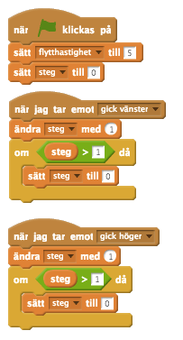
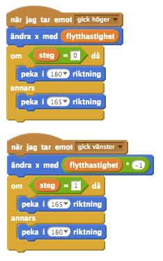

Checklista
- Genom att använda två sprites för benen kan vi göra så att det ser ut som att monstret går. För att göra detta behöver vi skapa en variabel som växlar mellan två lägen, en för benet som rör sig framåt och det andra som rör sig bakåt(vi kommer att alternera vilket läge som är aktivt för de olika benen).
För att göra detta behöver vi först skapa en varibel, vi kan kalla den steg. Sedan, varje gång något förflyttningsevent sänds, ökar vi variabelns värde med 1. Om variabeln blir högre än 1(vi kan testa detta med operatorn större än, >) nollställer vi den tillbaka till noll.

- Nu kan vi göra så att benen promenerar(svingar längs en cirkels rand) genom att kolla mot vår variabel
steg. När variabeln är satt till noll kan vi ändrariktningpå benens svingrörelser (här använde vi en statisk riktning för att inte benen ska bli tokiga om vår variabel och vinkeln inte matchar, men du kanske vill att ditt monster ska göra så).
Glöm inte att flytta benen med kroppen med hjälp av variabeln flytthastighet.

Du skulle kunna använda samma sorters åtgärder till att skapa enkla vinkande armar eller till och med flaxande fågelvingar.